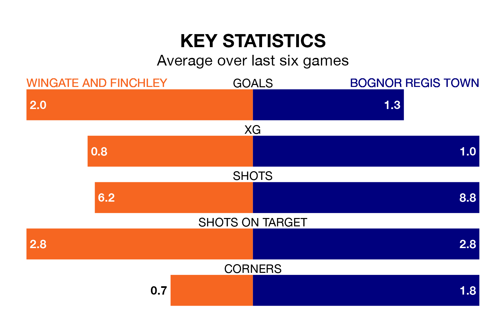

Wingate and Finchley face Bognor Regis Town on Saturday seeking to protect their long unbeaten run in the Isthmian Premier Division.
The Blues are unbeaten in six, with three wins and three draws, ahead of the 3pm kick-off.
They face a Bognor Regis team who have won two and drawn two over the same number of games.
With 60 goals in 32 games so far this season, Wingate & Finchley are scoring more than average in the league with 1.9 goals per game. And they are conceding at an average rate, letting in 52 goals at a rate of 1.6 per game.
Bognor Regis, meanwhile, are average scorers, with 1.6 goals per game. They have conceded 1.4 goals per game.
The Blues are third in the table after 32 games, of which they have won 17 and drawn five, earning 56 points.
Town are nine places behind the hosts in 12th, with 12 wins and 11 draws putting them on 47 points.
In the last 10 years, Wingate & Finchley and Bognor Regis have played each other on 15 occasions. Wingate & Finchley won three of them, Bognor Regis 11, and they drew once.
On average, the Blues scored 1.3 goals and Bognor Regis 2.6 in those matches.
Their last meeting was on February 25 2023, when Wingate & Finchley won 4-2 at home.
Wingate & Finchley's last match was on March 9, a 2-0 win against Canvey Island.
Bognor Regis lost 2-1 against AFC Hornchurch last time out, also on March 9.
Updated: 15:10 (UTC), 15/03/24